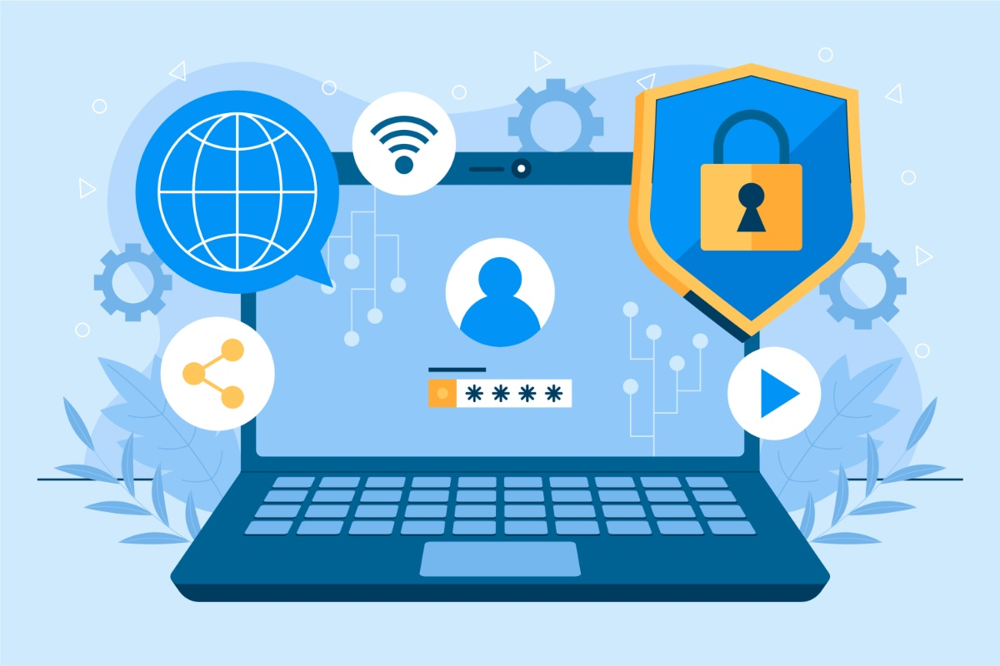

¿Por qué es importante protegernos digitalmente?

Vivimos en una sociedad cada vez más conectada en la que estudiamos, nos comunicamos, compartimos información y tomamos decisiones a través de dispositivos y servicios digitales. Esta realidad nos ofrece muchas oportunidades, pero también implica riesgos que no siempre son visibles a primera vista. Por este motivo, resulta fundamental aprender a proteger nuestra vida digital del mismo modo que protegemos nuestra seguridad en el mundo físico.
La seguridad digital hace referencia al conjunto de conocimientos, hábitos y herramientas que nos permiten utilizar la tecnología de forma segura, responsable y consciente, protegiendo nuestros dispositivos, nuestros datos personales, nuestra identidad digital y nuestro bienestar. No se trata solo de saber usar aplicaciones o dispositivos, sino de entender qué puede salir mal y cómo podemos prevenirlo.
A lo largo de esta situación de aprendizaje aprenderás a identificar los principales riesgos que existen en los entornos digitales y a conocer las herramientas que ayudan a reducirlos. El objetivo no es generar miedo, sino desarrollar criterio y autonomía para tomar decisiones responsables cuando usamos la tecnología.